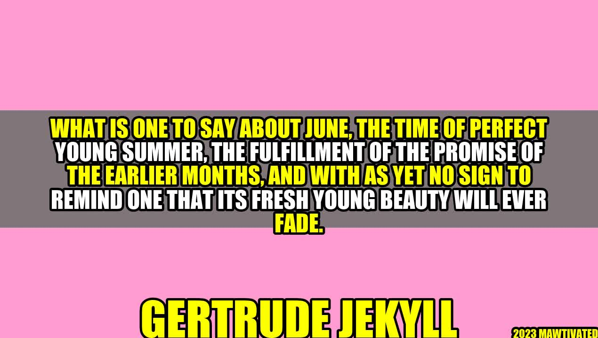

May's Promise Fulfilled

In the quiet countryside of California, Ellie waited eagerly for the coming of June. She knew that June was the culmination of spring's promise. A time when nature was in full bloom, the sun was out, and everyone was more alive. She looked forward to long days at the beach, lazy afternoons in the park, and quiet nights under the stars.
Gertrude Jekyll and the Love for Gardens
Gertrude Jekyll was an English horticulturist, garden designer, and artist. She was known for her passion for gardens and her creative use of color, texture, and form. Her love for gardens was founded on the belief that they could lift the spirit, refresh the soul, and nourish the body.
Activities to enjoy in June
- Beach outings with family and friends
- Picnics and BBQs in the park
- Evening strolls under the stars
- Nature walks and hikes in the mountains
- Outdoor concerts and music festivals
A Time for Reflection
June has always been a special time for me. It is a time for reflection and gratitude. I take stock of all that has happened in the past year and celebrate all that I have achieved. It is a time to reconnect with loved ones, to appreciate the beauty of nature, and to enjoy the simple things in life. June is a reminder that life is short, and we must make the most of every moment.
Three Things to Remember about June
- June is a time of promises fulfilled – a time to celebrate the beauty of nature and the joys of life.
- June is a time for reflection and gratitude – a time to take stock of our achievements and to appreciate the simple things in life.
- June is a time to make memories – a time to reconnect with loved ones, to enjoy new experiences, and to have fun.
Practical Tips for Enjoying June
- Plan ahead – make a list of activities to do and places to visit.
- Be prepared – bring sunscreen, water, and snacks when going outdoors.
- Stay safe – be mindful of the weather, the surroundings, and the people around you.
- Capture the moment – take photos, write journals, or create scrapbooks to remember your experiences.
- Have fun – let go of worries, embrace new opportunities, and enjoy the moment.
Article Details
- Category: Lifestyle
- SEO Keywords: June, summer, nature, reflection, gratitude, memories, Gertrude Jekyll
- Trending Hashtags: #June #Summer #Nature #Reflection #Gratitude #Memories #GertrudeJekyll
Curated by Team Akash.Mittal.Blog
Curated by Team Akash.Mittal.Blog
Share on Twitter Share on LinkedIn